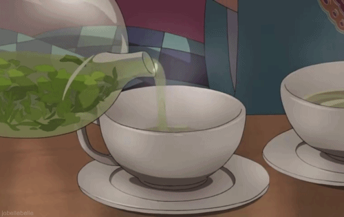

Chá de hortelã

Descrição
Com apenas dois ingredientes, você poderá aproveitar uma das mais aconchegantes e refrescantes bebidas para dias preguiçosos.
Ingredientes
- 250 ml de água
- Folhas frescas de hortelã a gosto
- Açúcar (opcional)
Modo de preparo
- Ferva: Ferva a água.
- Escolha a hortelã: Coloque as folhas frescas de hortelã em uma xícara fofa.
- Misture: Encha a xícara com água fervente. Aguarde 5 minutos. Aproveite!